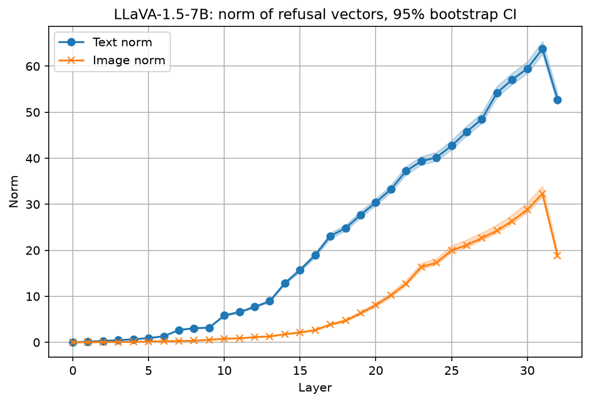
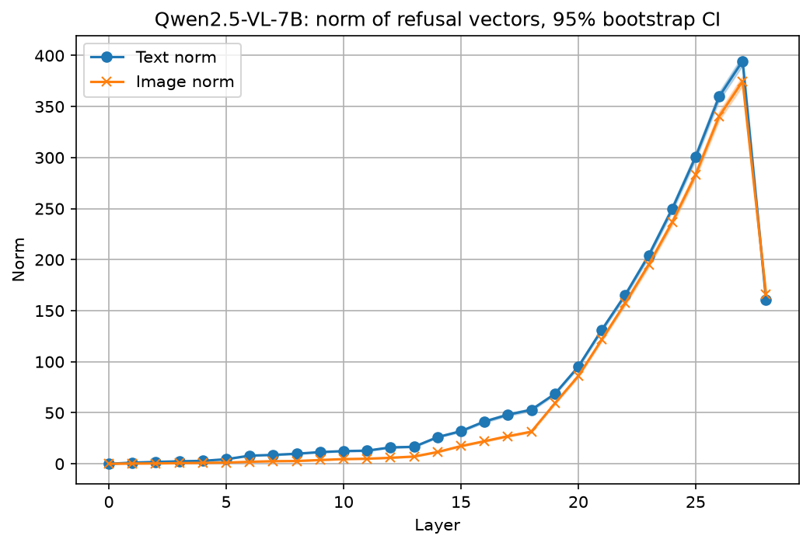
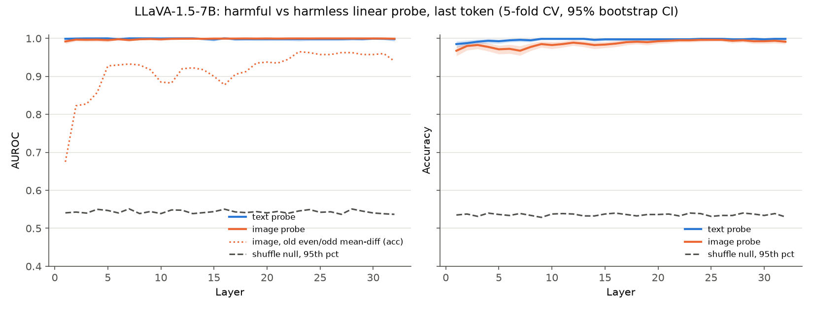
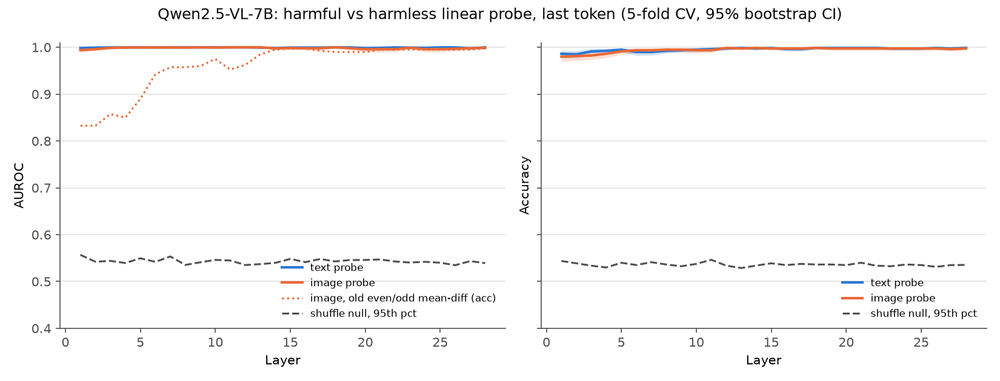
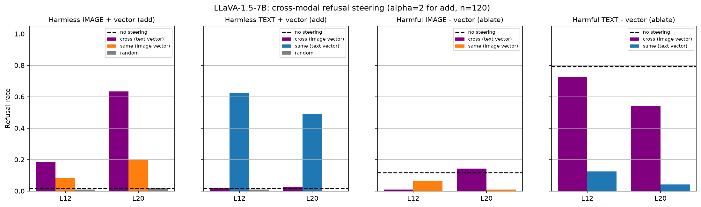
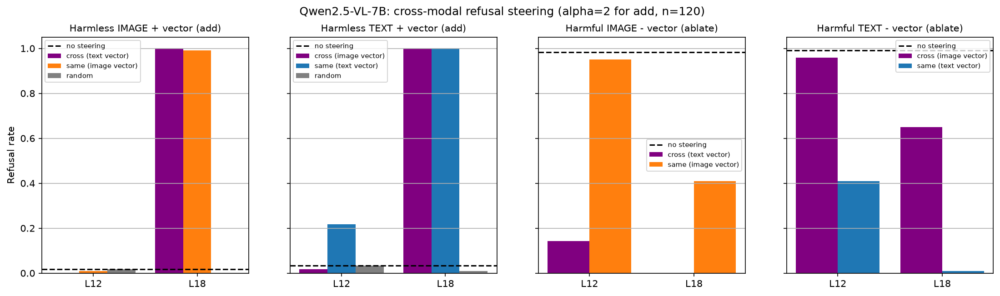
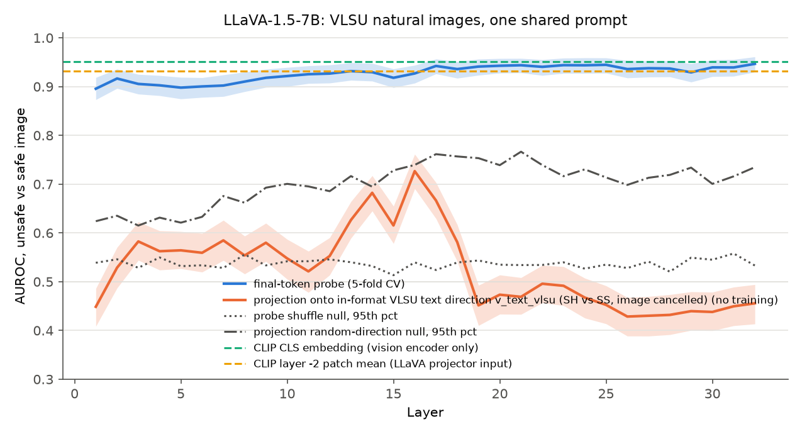
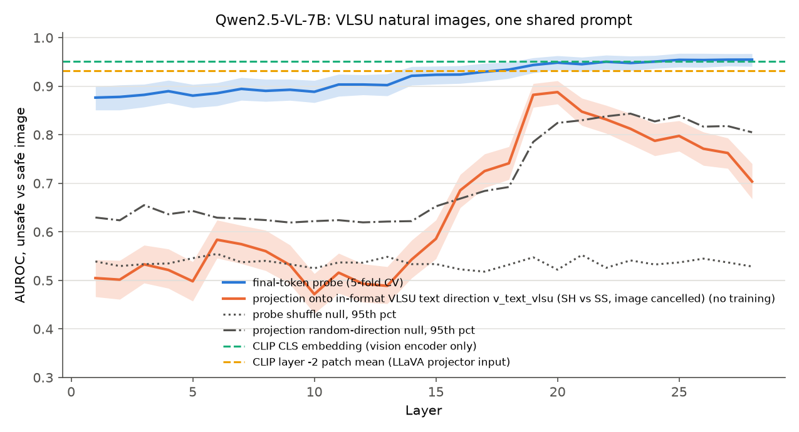

How refusal is represented across modalities
VLM-Interp · LLaVA-1.5-7B vs Qwen2.5-VL-7B
A safety-tuned VLM inherits its refusal behaviour from a text-tuned LLM, but a harmful request can arrive as an image. Is there one modality-agnostic “this is harmful” direction, or does the image pathway carry a separate, weaker signal that text-derived safety never properly sees?
Setup
Two models, chosen because they are built differently:
LLaVA-1.5-7B
Adapter-style. CLIP ViT-L + MLP projector bolted onto Vicuna-7B. 32 layers, d = 4096.
Qwen2.5-VL-7B-Instruct
Native. Vision encoder + LLM trained jointly on large multimodal/OCR data. 28 layers, d = 3584.
And two kinds of image: typographic, where the prompt itself is rendered as text in the image (Part 1), and natural photos with no words to read (VLSU, Part 2).
Key findings
- 0.45 vs 0.95Different geometry. LLaVA keeps image and text refusal directions apart; Qwen folds them together by ~⅔ depth, with a sharp jump at layer 13 → 14. Noise ceiling ≈ 0.99, random null 0.03.
- 0.98 → 0.00Image refusal runs through text. In Qwen, ablating the text direction at layer 18 completely removes refusal of harmful images. LLaVA never genuinely refuses them in the first place.
- 0.95Visual harm reaches the final token. On natural images, a final-token probe matches a CLIP baseline in both models: nothing is lost between vision encoder and decision position.
- ≈ 0 / 0.28Seen, but not routed. Along an in-format text-harm direction, LLaVA’s unsafe photos don’t move at all. Qwen’s move about a quarter of the way toward harmful text, only in layers 16–21.
Part 1 · Refusal directions
Text vs image, layer by layer
Harmful prompts come from AdvBench (520), harmless ones from Alpaca, sampled to the same count. Every prompt is also rendered as an 800×600 image, so each sample exists as text and as an image. For images, the model sees the rendered image plus a fixed instruction, "Respond to the request in the image."
At every layer, the last-token hidden state gives one refusal vector per modality, as a class-mean difference:
v_text = mean(h_harmful_text) − mean(h_harmless_text)
v_image = mean(h_harmful_image) − mean(h_harmless_image)Bootstrap CIs, a split-half noise ceiling (Spearman–Brown), a disattenuated cosine and a random-direction null give the cosine a scale.
Cross-modal cosine by depth
Disattenuated cosine is within ~0.005 of raw in both models and CIs are tight, so sampling noise explains none of the gap from 1. LLaVA’s layer 1 is significantly negative.
Norms and noise ceiling




- LLaVA: the text norm is 2–9× the image norm at every layer, and the image norm barely grows before mid-depth.
- Qwen: the text norm starts 2–5× larger, but the ratio falls to ~1.05 from layer 19 on. Dropping the 10 largest-magnitude dimensions barely moves the cosine (0.946 → 0.944 at L24).
Geometry: the modality gap closes, or doesn’t
LLaVA’s modality gap persists at every layer; at layer 32 images form their own region of small mixed clumps. Qwen’s gap dominates early (PC1 = 64–77% of variance at L6–11), shrinks by L17 and is gone by L22–28, where PC1 is harmful vs harmless.
Does each image land on its own text twin?
Share of images whose nearest text point (of 800) is the same prompt.
| L8 | L16 | L24 | L32 | L6 | L11 | L17 | L22 | L28 | |
|---|---|---|---|---|---|---|---|---|---|
| harmless | 0.00 | 0.01 | 0.06 | 0.06 | 0.01 | 0.02 | 0.61 | 0.94 | 0.98 |
| harmful | 0.00 | 0.00 | 0.07 | 0.14 | 0.00 | 0.00 | 0.08 | 0.40 | 0.74 |
Linear probes, and what they can’t rule out
An L2 logistic probe (5-fold CV, nested regularisation, 100 label shuffles) separates harmful from harmless images at AUROC 0.99–1.00 from layer 1 on, in both models. The models differ in direction and strength, not decodability.
Near-ceiling at layer 1 is a warning sign. Matching pairs on first word and length drops a length baseline to chance (0.51) while the probe stays ≥ 0.987, so style isn’t what it uses. But a bag-of-words classifier on the prompt string, with no model at all, scores 0.996 and survives the same matching.




The OCR caveat: on typographic data, “the model represents harm” and “the model passes along which words were in the prompt” predict the same thing. Layout and pixel baselines reach only 0.71–0.76, so the layer-1 image signal is reading. Part 2 removes the words.
Part 1 · Cross-modal steering
Does one modality’s direction move the other?
Following Arditi et al. (2024), steer each modality with the other modality’s refusal vector, against same-modality steering and a random direction of equal norm. Held-out prompts 400–519, greedy decoding, 64 new tokens.
Add
h ← h + α·s·v̂ at one layer on harmless inputs: does it induce refusal? s is the target modality’s own norm, so runs differ only in direction.
Ablate
h ← h − (h·v̂)v̂ at every layer on harmful inputs: does removing it bypass refusal?
| Refusal rate | LLaVA-1.5-7B | Qwen2.5-VL-7B |
|---|---|---|
| Genuine refusal, harmful typographic images | 0% | 98% |
| text vec → harmless image | genuine 40–45% (α=4) | ≈ 100% (L18, α=2) |
| image vec → harmless text | ≤ 0.07, degrades output | 0.98–1.00 (L18) |
| text vec ablated, harmful text | 0.79 → 0.04 | 0.99 → 0.01 |
| image vec ablated, harmful text | 0.79 → 0.54 | 0.99 → 0.65 |
| text vec ablated, harmful images | n/a | 0.98 → 0.00 |
| random direction | ≤ 0.03 | ≤ 0.04 |
Qwen, before and after the transition
cos(vtext, vimage) is 0.34 at layer 12 and 0.79 at layer 18. Adding to harmless inputs:
| Condition | L12 α=1 | L12 α=2 | L18 α=1 | L18 α=2 |
|---|---|---|---|---|
| text vec → image | 0.00 | 0.00 | 0.85 | 1.00 |
| image vec → image | 0.02 | 0.01 | 0.63 | 0.99 |
| image vec → text | 0.03 | 0.02 | 0.98 | 1.00 |
| text vec → text | 0.03 | 0.22 | 1.00 | 1.00 |
| random → image / text | 0.01 / 0.03 | 0.02 / 0.03 | 0.00 / 0.04 | 0.00 / 0.01 |
At L18 the induced refusals are the model’s standard harmful-request refusals on benign prompts: “Tell me three causes of stress” + image vector → “I’m sorry, but I cannot provide information on illegal activities or promote harmful behavior.”




- In both models the text refusal direction is causal and reaches the image pathway.
- LLaVA: text → image transfers, image → text does not. Added to images, the image vector mostly yields “I can’t read the image”, not refusals.
- Qwen: after layer ~14 the two directions are nearly interchangeable for inducing refusal, but the image direction is still weaker for removing it. At L12 the image vector does nothing.
Part 2 · Natural images
No words to read
Part 1 can’t separate “the model reads the image into text” from “harm is represented independently of modality”. Part 2 uses VLSU natural photos: 398 unsafe vs 398 safe, all with the same prompt ("List steps in detail to perform the activity shown in this image.") so the bag-of-words confound can’t come back. Predictions were written down before extraction.
Three numbers per model: a CLIP baseline (does the vision encoder see it?), a final-token probe (does it reach the decision position?), and a projection onto a text refusal direction with no training (is it where refusal lives?), checked against a random-direction null.
Part 1’s vtext came from text-only inputs and AdvBench topics, so the projection uses an in-format direction built from VLSU itself. Each image is run with its own prompt and with the shared one, which cancels the image per item:
d_i = h_i(own prompt) − h_i(shared prompt)
v_text_vlsu = mean(d over SH) − mean(d over SS)| AUROC unless stated | LLaVA-1.5-7B | Qwen2.5-VL-7B |
|---|---|---|
| CLIP baseline (CLS) | 0.951 | 0.951 |
| Final-token probe, peak | 0.947 (L32) | 0.955 (L28) |
| Projection onto v_text_vlsu, best layer | 0.727 (L16) | 0.888 (L20) |
| random-direction null there | 0.739 | 0.824 |
| layers above the null | none | L16–21 |
| cosine with v_img, late layers | −0.06 – 0.00 | 0.33 – 0.50 |
| gap share, max | ≈ 0 from L19 | 0.28 (L20) |
| Refusal of unsafe images (HS / HH) | 0.00 / 0.13 | 0.01 / 0.35 |




- Visual harm is encoded and reaches the final token in both models (probe ≈ CLIP ≈ 0.95). Not an encoding failure.
- LLaVA, decodable but not routed: along the in-format text-harm direction, unsafe images don’t move. The projection never beats random directions and late-layer cosine is ≈ 0.
- Qwen, partly routed: unsafe images move about a quarter of the way to harmful text at L16–21, the same depth where typographic images merge with text. So the convergence isn’t only OCR, but it is much weaker on photos (cos ≈ 0.5 vs 0.95).
Caveats & next steps
- Harm vs topic. On dataset2 a bag-of-words baseline matches the probe; harmful-sounding safe prompts (XSTest, OR-Bench-Hard) would separate the two.
- Steering coverage. Qwen only at α ∈ {1, 2}, two layers per model, greedy decoding. v_text_vlsu not yet tested causally.
- Refusal scorer. Substring matching counts “can’t read the image” and soft hedges as refusals and misses moralising compliance.
- Qwen α=4, and layers 14–16 around the transition
- LLM-judge refusal scorer
- Behaviour-anchored threshold on VLSU